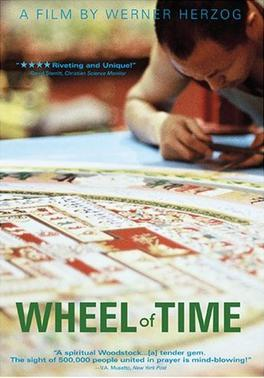

Werner Herzog
2003
80 minutes
This is a Werner Herzog documentary about sand mandalas. It has a good amount of sand and some basic explanations of Tibetan Buddhism.
You're not a Buddhist yourself, but you have had several friends who practiced their own peaceful versions of Buddhism with varying levels of violence. One of your co-workers when you drove a cab was extremely vocal about his Buddhist practices and beliefs, which was kind of hilarious considering how notorious he was for getting into fistfights with customers, one of which actually landed him in court with a disorderly conduct ticket. He claimed of course that this wasn't his fault--he was merely defending himself after arguing with some passengers about whether it was 3,000 or 30,000 people killed on 9/11. In any case he and the passengers ended up fighting in the street after he kicked them out of his cab, with one woman screaming at him repeatedly "You're not a real American! You're not a real American!" You would concede that he may not have thrown the first punch in most of his violent encounters, but you were familiar enough with his behavior to know that he likely instigated the fight and that he was notoriously unable to de-escalate such conflicts.
Another friend of your girlfriend at the time one day shaved her head and started wearing robes and declared that she was in training to become a Buddhist nun, professing her beliefs at every opportunity. You found it a bit hilarious that this woman still owned and wore a wristwatch and you did not.
Time to choose something different: